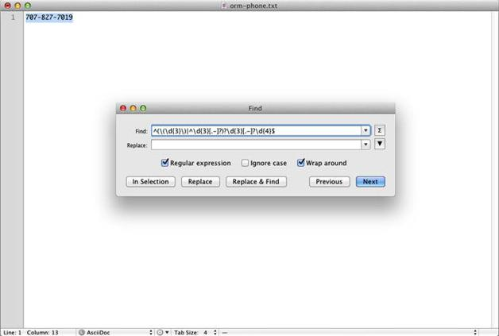
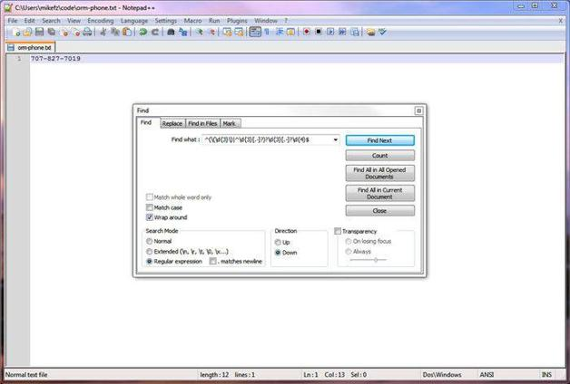
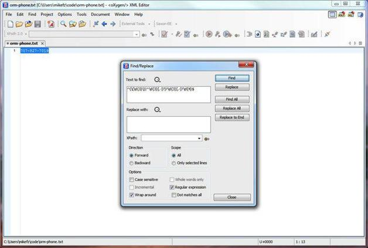

1.9 应用举例
本章最后，我们在几个应用程序里测试一下匹配电话号码的正则表达式。
TextMate是一个只在Mac上运行的文本编辑器，它采用与Ruby语言相同的正则表达式程序库。你可以通过Find（搜索）对话框使用正则表达式，如图1-3示。将Regular expression旁的复选框选中。

图1-3 在TextMate中测试正则表达式
Notepad++是运行于Windows上的一个常用的免费文本编辑器，它采用了PCRE（Perl Compatible Regular Expression，Perl兼容正则表达式）库。在勾选了Regular expression旁的单选按钮之后，就可以用正则表达式进行查找和替换了（参见图1-4）。

图1-4 在Notepad++中测试正则表达式
Oxygen是个流行且强大的XML编辑器，它使用Perl 5的正则表达式语法。可以通过图1-5中的查找和替换对话框或者通过XML Schema的正则表达式构建工具使用正则表达式。要在查找和替换对话框里使用正则表达式，则要勾选Regular expression旁的复选框。

图1-5 在Oxygen中测试正则表达式
对正则表达式的简介到此为止。恭喜你，你在本章已经接触了不少基础内容。下一章的重点是简单的模式匹配。